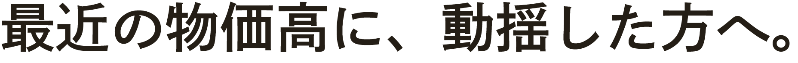
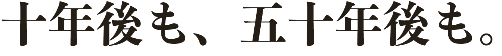

案A 「夜の劇場」── v4の舞台美術をステップ版に移植
黒ベタをやめ、golden hour実写を大きくぼかした暗幕に。金縁の緞帳・罫・章番号が戻る。リスク最小の正統進化。

ACT 01
YAMATO FUDOSAN ── NARA
最近の物価高に、
動揺した方へ。
参照: NOT A HOTEL／SANU（フルブリード＋極小タイポ型）＋承認済みv4の緞帳意匠。書体: 秀英角ゴ銀 M 細身×字間0.1em。
幕A「最近の物価高に、動揺した方へ。」を5つの方向で組んだもの。ステップ送りの機構は全案共通で、変わるのは背景と書体。設計意図は アイデア集_FVビジュアル刷新_20260818.md を参照。本シートの見出しはローカル都合で Zen Kaku Gothic New 表示（本実装は秀英角ゴ銀）。
黒ベタをやめ、golden hour実写を大きくぼかした暗幕に。金縁の緞帳・罫・章番号が戻る。リスク最小の正統進化。
ACT 01
YAMATO FUDOSAN ── NARA
最近の物価高に、
動揺した方へ。
参照: NOT A HOTEL／SANU（フルブリード＋極小タイポ型）＋承認済みv4の緞帳意匠。書体: 秀英角ゴ銀 M 細身×字間0.1em。
画面を「紙」にする。生成りの和紙面＋パンフ実測の朱赤 #C64A00 ＋金罫。頁をめくるステップ演出と意味が噛み合う。毛筆はパンフ入稿ロゴを使用（下は代替書体 Yuji Syuku）。
花鳥風月
YAMATO FUDOSAN ── NARA
住宅価格が、目まぐるしい速度で上がっています。
最近の物価高に、
動揺した方へ。
参照: 三次元 The Classic（生成り×書体の格）＋パンフレット0723表紙。8/4指示「パンフと世界観統一」への直接回答。朱赤の色面は1画面1点まで。
コピー幕も全景写真化し、文字は左下1行。最も「余白＝格」に忠実。ただし0円台帳・価格幕との相性が課題で、冷たく振れる地雷もある。

最近の物価高に、動揺した方へ。
YAMATO FUDOSAN ── NARA
参照: neie／溝田建築／AICHLER。書体: 秀英角ゴ銀 W3・字間0.12〜0.14em。
全13景の背景を実写で通し、情報幕（0円台帳・価格）はダークガラス面に載せる。写真資産272枚を最大活用。

YAMATO FUDOSAN ── NARA
最近の物価高に、
動揺した方へ。
参照: 原則02「写真を面として敷く」＋D-5ガラス規格（ダーク上のみ）。弱み: 幕の「転換」の呼吸が弱くなる。
左に生成りの縦帯を常設し、章題「第一幕」がステップで替わる。ドットナビを和の意匠に昇華。SPでは上帯に変換が必要で工数最大。
01
第一幕 宛名
／13

最近の物価高に、
動揺した方へ。
参照: Re Loop（スプリット型）／塚地建築（和の作字）。書体: 帯だけ Zen Old Mincho 縦組・主面は秀英角ゴ銀。
上の各パネルはWeb都合の代替書体表示。こちらが本物。①②=DNP秀英角ゴシック銀 Std B（承認規格の見出し書体・Typekit ftb5hqp）③=凸版文久見出し明朝 EB（Adobe Fonts有効化済み・「一点差し」の新候補。Zen Old Minchoより墨だまりが濃く、案Bの思想コピーに合う）。



検証: characterRuns 1本＝フォールバックなし（font-director規定のIllustrator検証）。Web実装時は kit ftb5hqp のドメイン設定（本番＋localhost）を確認のこと。
推奨は案B主軸＋案Aの舞台術（コピー幕＝紙と金、設備景＝golden hour写真）。理由と共通の下地修正6点はアイデア集を参照。